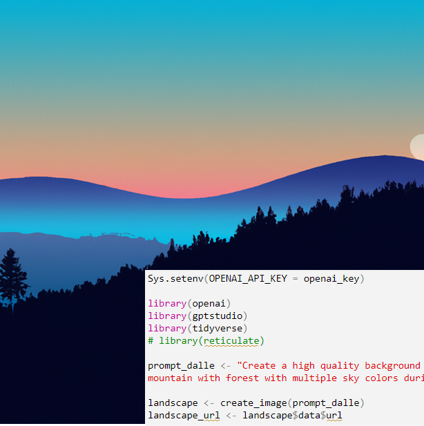
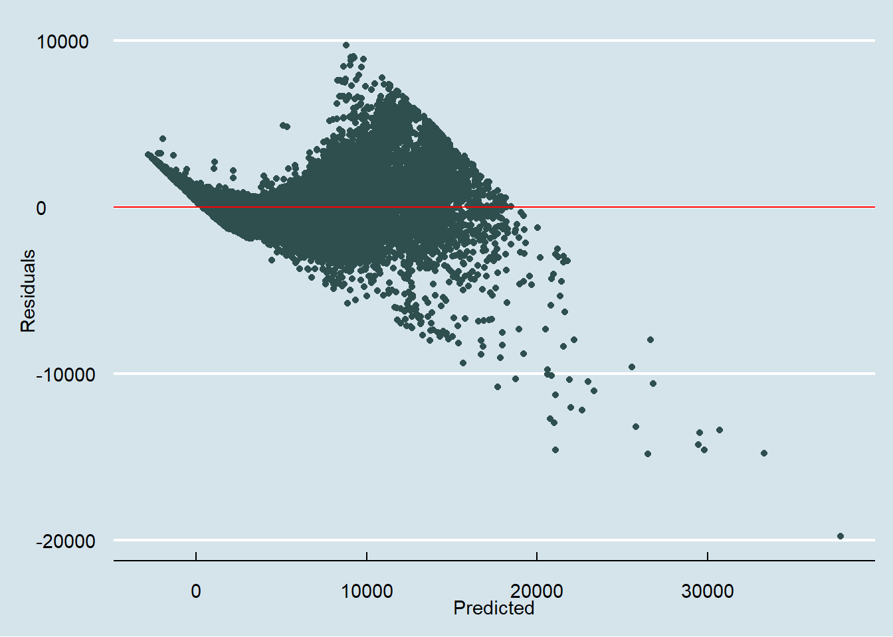
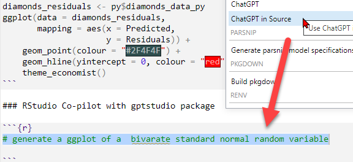
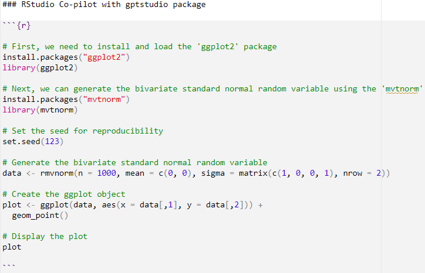
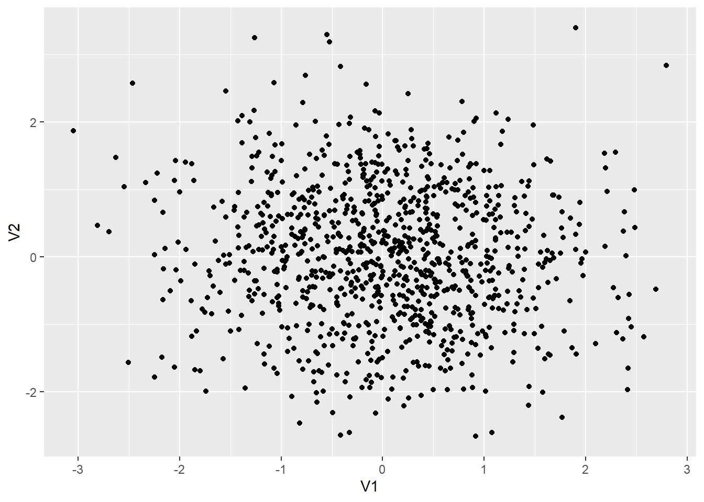

Sys.setenv(OPENAI_API_KEY = openai_key)
library(openai)
library(gptstudio)
library(tidyverse)
# library(reticulate)
prompt_dalle <- "Create a high quality background for my laptop with a minimalist landscape of a mountain with forest with multiple sky colors during sunset"
landscape <- create_image(prompt_dalle)
landscape_url <- landscape$data$url
# destination <- "mylandscape.png"
# download.file(landscape_url, destfile = destination, mode = "wb")I want to test-demo Quarto’s capabilities (how-to details are here on my substack). My previous data science blog was this distill site. Specifically, in this post I’d like to show:
- How the openai package can prompt GPT and DALL-E via the API
- How Quarto is truly multi-language: this page runs both R and python code chunks (even sharing the diamonds_df dataframe)
- How the gptstudio package enables GPT as a copilot within the RStudio IDE (this is not a Quarto feature per se)
Prompting GPT and DALL-E via API
The openai package includes create_image() which returns a convenient list that contains a URL of the image. For this post, I only evaluated create_image() once and saved the DALL-E image to a .png file because I don’t like every image; then commented the code. However, the subsequent GPT text prompt (i.e., completion object) is evaluated. In other words, the response to my prompt (“what are likely to be the top three implications of artificial intelligence on edtech?”) is different each time the page is rendered.

Similarly, create_chat_completion returns a list. We can easily retrieve the reply:
library(stringr)
prompt_gpt <- "what are likely to be the top three implications of artificial intelligence on edtech?"
prompt_gpt_chars <- nchar(prompt_gpt)
prompt_gpt_words <- length(strsplit(prompt_gpt, "\\s+")[[1]])
# Here is the call to GPT 3.5 with my prompt_gpt text
reply_gpt <- create_chat_completion(
model = "gpt-3.5-turbo",
messages = list(
list(
"role" = "user",
"content" = prompt_gpt
)
)
)
# The response by GPT is a chat completion object that contains an
# array (list) of choices (can be more than one) including the message.content
reply_gpt_message <- reply_gpt$choices$message.content
reply_gpt_chars <- nchar(reply_gpt_message)
reply_gpt_words <- length(strsplit(reply_gpt_message, "\\s+")[[1]])
total_chars <- prompt_gpt_chars + reply_gpt_chars
total_words <- prompt_gpt_words + reply_gpt_words
total_tokens <- reply_gpt$usage$total_tokens
token_stats_text <- paste("Total tokens =", total_tokens,
". Given", total_words, "words and", total_chars, "characters, that's",
sprintf("%.3f", total_tokens/total_words), "tokens/word and",
sprintf("%.3f", total_tokens/total_chars), "tokens/character.")
print(token_stats_text)[1] "Total tokens = 302 . Given 241 words and 1822 characters, that's 1.253 tokens/word and 0.166 tokens/character."cat(reply_gpt_message, sep = "\n")The top three implications of artificial intelligence (AI) on edtech (education technology) are:
1. Personalized learning: AI has the potential to revolutionize education by enabling personalized learning experiences tailored to the individual needs and abilities of each student. AI-powered systems can analyze vast amounts of data collected from students to identify their strengths, weaknesses, and learning styles, allowing educators to provide customized content, resources, and feedback. This helps students learn at their own pace and in ways that align with their specific requirements.
2. Intelligent tutoring: AI-powered intelligent tutoring systems offer individualized support and guidance to students, mimicking the role of a human tutor. These systems use natural language processing and machine learning algorithms to assess students' knowledge, predict misconceptions, and provide targeted recommendations and explanations. With AI, students can access on-demand assistance and personalized tutoring, which enhances their understanding and academic success.
3. Enhanced administrative processes: AI can streamline administrative tasks and processes within education institutions, freeing up time for educators to focus on teaching. AI-powered tools can automate routine tasks such as grading assessments, generating reports, and managing student records. This automation improves efficiency, reduces administrative burdens, and enables educators to devote more time to instruction and student engagement.
Overall, AI in edtech holds the potential to provide tailored learning experiences, personalized tutoring, and improved administrative efficiency, ultimately enhancing the quality and effectiveness of education.Executing a python code block and the sharing the dataframe
Now I will just load the built-in diamonds dataset and lazily convert the three factor levels (cut, clarity, and color) to integers. But I will skip R’s regression model, lm(), because I am going to let python fit the linear model …
diamonds_df <- diamonds
diamonds_df$cut_int <- as.integer(diamonds_df$cut)
diamonds_df$clarity_int <- as.integer(diamonds_df$clarity)
diamonds_df$color_int <- as.integer(diamonds_df$color)
# Going to skip lm() in R and let python fit the model!
# lm_diamonds <- lm(price ~ carat + cut_int + color_int + clarity_int, data = diamonds_df)
# diamonds_df$residuals <- resid(lm_diamonds)
# diamonds_df$predictions <- predict(lm_diamonds)
# diamonds_df |> ggplot(aes(x = predictions, y = residuals)) +
# geom_point() +
# geom_hline(yintercept = 0, linetype = "dashed") +
# labs(title = "Residual Plot", x = "Predicted Values", y = "Residuals")… and here is the python code chunk! This is possible because the first line of the fenced code braces the executable code with “python” per these instructions.. Of course, a python installation is required to render locally.
```{python}
#| message: false
diamonds_data_py = r.diamonds_df
import statsmodels.api as sm
y = diamonds_data_py[["price"]]
x = diamonds_data_py[["carat", "cut_int", "color_int", "clarity_int"]]
x = sm.add_constant(x)
mod = sm.OLS(y, x).fit()
diamonds_data_py["Predicted"] = mod.predict(x)
diamonds_data_py["Residuals"] = mod.resid
```And, finally, I will revert back to R to utilize ggplot. As explained by Nicola Rennie the key here is to load the reticulate package so that we can use the py prefix to retrieve the diamonds_data_py object. But you can see: the original R dataframe, diamonds_df, was retreived in python, via diamonds_data_py = r.diamonds_df, and then R retrieved that model via diamonds_residuals <- py$diamonds_data_py. Sweet! But, okay, not the best line we’ve ever fit. That’s why we look at the residuals, after all.
library(reticulate)
library(ggplot2)
library(ggthemes)
diamonds_residuals <- py$diamonds_data_py
ggplot(data = diamonds_residuals,
mapping = aes(x = Predicted,
y = Residuals)) +
geom_point(colour = "#2F4F4F") +
geom_hline(yintercept = 0, colour = "red") +
theme_economist()
RStudio Co-pilot with gptstudio package
What you can’t easily see on the page is the co-pilot enabled by the gptstudio package. Once the package is installed, I only neeed to setup the API key via the command:
Sys.setenv(OPENAI_API_KEY = "<APIKEY>")For example, below I call for help with this prompt (“generate a ggplot …”)

… and the comment changes to the following:

It’s not a great example but instructive. This code requires two quick tweaks in order to work. You do need to know how to write code, but at the same time, co-pilot clearly saves time; e.g., for some analyis, it’s cut the time required in half or better.
